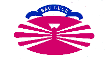

Organiza
La DudesConf se organiza gracias al hospedaje y patrocinio de GPUL, el grupo de programadores y usuarios de linux de la Coruña.
Patrocina


¿Desea patrocinarnos?
Si desea patrocinar este evento, por favor, escríbanos a dudes-organizacion@ceu.fi.udc.es